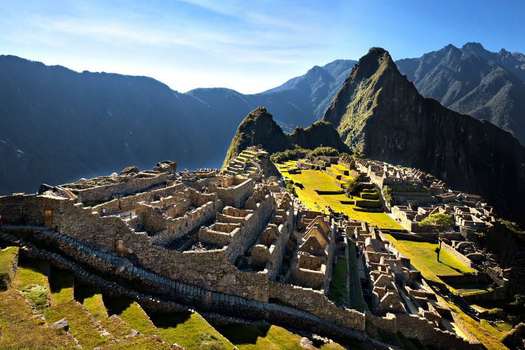

Machu Picchu, Peru
What is Machu Picchu?
Situated high-up in the Andes Mountains, Machu Picchu is an ancient city built by the Inca empire in the 15th century. The site highlights the incredible masonry skills of the Incans, with the stone buildings being so well-preserved despite being constructed without the use of mortar or more modern construction methods and tools. As the Incans didn't have a written language, no records exist for the purpose of the site, but theories range from a ceremonial site to a military stronghold
Tips on visiting
Tickets to Machu Picchu should be booked in advance to ensure you secure your desired timeslots, this is done via the Peruvian Government's tourism site and costs S/.154. Due to its remote location, in order to reach Machu Picchu you must first pass through the city of Cusco, this can be reached by plane or by a 21-hour bus journey from the capital of Lima. Altitude sickness is very common for visitors to Cusco, ensure you stay well hydrated to combat this. From Cusco, you then need to catch the train to Aguas Calientes, the nearest town to the site. You then need to get a bus from Aguas Calientes to Machu Picchu, these can be booked at a variety of providers and buses leave every 5 minutes in the morning.
You are allocated 4 hours when you buy a ticket and it is recommended that you utilise this time as there is plenty to see! There is a "no walking backwards" rule enforced, meaning that once you've seen a site / viewpoint there is no going back, so make sure you take your time and take everything in. The rules state that you need to hire a tour guide to escort you on your visit, however many tourists have reported that this isn't enforced and have opted to go solo.